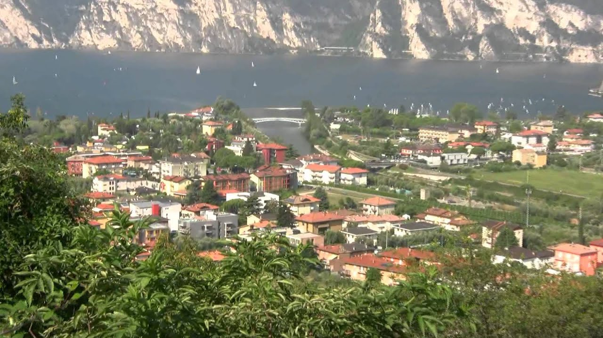

Video's
Even wegdromen achter de computer? Op deze pagina vind je mooie en leuke filmpjes over Italië. Waan je in Italiaanse sferen en ontdek meer van het land en de Italiaanse cultuur.
Verhalen over Italië
Italië - Zondag met Lubach (S09)
Italië heeft sinds kort bonje met de rest van de Europese Unie over hun begroting: Europa heeft de begroting van Italië afgekeurd.
Volkslied van Italië
Het schitterende volkslied van Italië. De officiele naam van het lied is: Il Canto degli Italiani (Het lied van de Italianen)
Volkslied van Italië
Het schitterende volkslied van Italië. De officiele naam van het lied is: Il Canto degli Italiani (Het lied van de Italianen)
Bezichtingen
Italie Gardameer 2015
Reis naar het Gardameer met autocar Carolus.
De mooiste steden van Italië
Er zijn een groot aantal steden in Italië, die verdient het om bezocht te worden. In dit filmpje staan ze op een rijtje.
De mooiste steden van Italië
Er zijn een groot aantal steden in Italië, die verdient het om bezocht te worden. In dit filmpje staan ze op een rijtje.
Eten
World's Original Pizza Restauarant in Naples, Italy

OK, the Pizza has pretty well conquered the world with a slice of varying styles from thick to thin from vegetarian to meat lover, even a Dairy Queen dessert Pizza.
Bekijk videoEen feest uit Italië - Rode pasta carbonara
Rode pasta carbonara: de link naar het recept kun je hier vinden: Klik hier voor het recept
Een feest uit Italië - Rode pasta carbonara
Rode pasta carbonara: de link naar het recept kun je hier vinden: Klik hier voor het recept